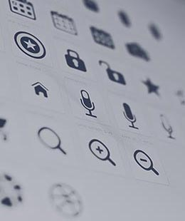
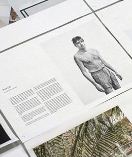

Hi there, je suis Kevin, creative developer et consultant en architecture web front-end basé à Rennes. J’aide les designers et développeurs à mettre en place de meilleures organisations, de meilleurs process, méthodes et outils en qualité et optimisation. Tout cela dans le but de garantir une maintenabilité du design de gros projets web sur le long terme. Je partage mon travail au travers d'articles, deconférences et veille sur Twitter.
Portfolio

